Práctica 7: Respuesta en frecuencia y Simulink
Contents
Datos generales:
Autor: Marmolejo Martínez Hamlet Jorge
Grupo: 2TV2
Profesor: Dr. Rafael Martinez Martinez
Objetivos:
- Conocer la representación de un sistema LTI en Matlab
- Manipulación de instrucciones en MATLAB
- Mostrar las gráficas bode para funciones de tranferencia
- Conocer la respuesta en frecuencia de un sistema
- Conocer los usos básicos de Simulink para resolver sistemas diferenciales
Introducción
En esta práctica se mostrará el procedimiento para: * Conocer la respuesta en frecuencia de un sistema LTI y su gráfica bode * Usar las herramientas de Simulink para resolver sistemas diferenciales
Simulación en código
El siguiente circuito mostrado en la imagen RLC_schematic.png
{kind=link}
Para circuitos RLC tenemos que: 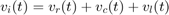
Para la resistencia el voltaje se define como: 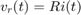
Para el inductor se puede definir el voltaje como 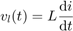
Para el capacitor se define el voltaje como 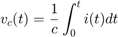
Y tenemos que 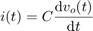
Aplicando el teorema fundamental del cálculo
Ahora sustituimos en la ecuación de LCK
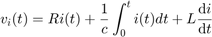
Reemplazamos a 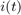
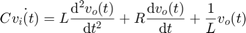
Y despejamos a C 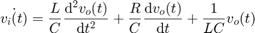
Ahora con la función obtenemos la transformada de laplace para conocer la función de transferencia *Aplicamos transformada de Laplace a la ecuación de entrada y nos queda 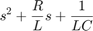 *Aplicamos ahora la transformada de laplace a la salida 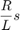 Ahora con la definición de la función de transferencia 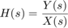 Sustituimos 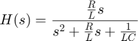
Ahora definimos 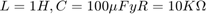
syms t
L=1;
C=100^(-6);
R=10^(3);
Una vez ya definidos formamos nuestra función de transferencia
circuit_sys=tf([(R/L)],[1 (R/L) (1/L*C)])
circuit_sys =
1000
--------------------
s^2 + 1000 s + 1e-12
Continuous-time transfer function.
Ahora obtenemos la respuesta al impulso
figure
impulse(circuit_sys)
legend('Respuesta al impulso')
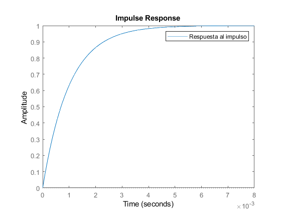 Ahora obtenemos la respuesta al escalón
figure
step(circuit_sys)
legend('Respuesta al escalón')
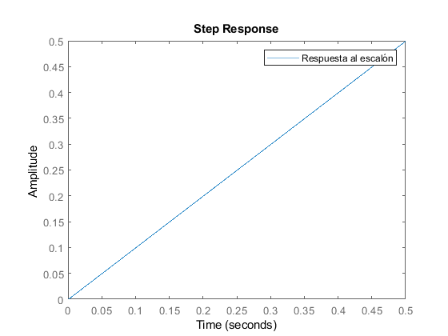 Definimos 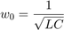$
w0=1/sqrt(R*C);
Se muestran las gráficas de bode
figure hold on for m=0:6 bode(tf([(R/L*(exp(-1*m)))],[1 (R/L*(exp(-1*m))) (1/L*(exp(-1*m))*C)])) pause(0.5) drawnow end grid on legend('m=1','m=1e-1','m=1e-2','m=1e-3','m=1e-4','m=1e-5','m=1e-6') title('Bode para la función de transferencia') hold off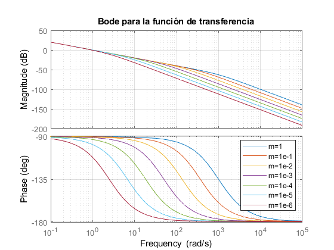
Simulación con simulink Ejercicio a)
Primero encontramos la solución analítca mediante la transformada de laplace y la función de transferencia
syms t
transformadaLaplace([6 5 1],[1],[1 0],[0 0],2*cos((4*t)-pi/3)*heaviside(t),10)
APLICAMOS TRANSFORMADA DE LAPLACE y substituimos condiciones iniciales
2
6 Y(s) - s + 5 s Y(s) + s Y(s) - 5
=
X(s)
SUBSTITUIMOS LA TRANSFORMADA DE LA ENTRADA
2
6 Y(s) - s + 5 s Y(s) + s Y(s) - 5
=
4 sqrt(3) s
--------- + -------
2 2
s + 16 s + 16
DESPEJAMOS Y(s)
Y(s)=
4 sqrt(3) s
s + --------- + ------- + 5
2 2
s + 16 s + 16
---------------------------
2
s + 5 s + 6
DESARROLLAMOS LAS FRACCIONES PARCIALES DE Y(s)
Y(s)=
sqrt(3) 29 4 sqrt(3) 47 2 sqrt(3) / sqrt(3) 1 \ 4
------- + -- --------- + -- --------- + s | ------- + -- | - --
5 10 25 25 25 \ 25 50 / 25
------------ - -------------- - -----------------------------------
s + 2 s + 3 2
s + 16
Aplicamos transformada inversa, asi la solución es
y(t)=
sin(4 t) cos(4 t) sqrt(3) sin(4 t) / sqrt(3) 29 \
-------- - -------- - ---------------- + exp(-2 t) | ------- + -- |
25 50 50 \ 5 10 /
/ 4 sqrt(3) 47 \ sqrt(3) cos(4 t)
- exp(-3 t) | --------- + -- | - ----------------
\ 25 25 / 25
Ahora encontramos la función de transferencia del sistema
G(s) =
-((2*3^(1/2))/(25*(s^2 + 16)) + s/(50*(s^2 + 16)) - 4/(25*(s^2 + 16)) - (3^(1/2)/5 + 29/10)/(s + 2) + ((4*3^(1/2))/25 + 47/25)/(s + 3) + (3^(1/2)*s)/(25*(s^2 + 16)))/((4*3^(1/2))/(s^2 + 16) + s/(s^2 + 16))
sqrt(3) 29 4 sqrt(3) 47
------- + -- --------- + --
2 sqrt(3) s 4 5 10 25 25 sqrt(3) s
--------- + ------------ - -- - ------------ + -------------- + ---------
#1 2 #1 s + 2 s + 3 #1
50 (s + 16)
- -------------------------------------------------------------------------
4 sqrt(3) s
--------- + -------
2 2
s + 16 s + 16
where
2
#1 == 25 (s + 16)
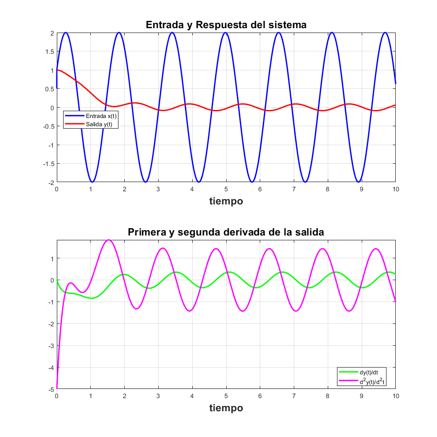 Presentamos el resultado numérico de la realización en simulink
close all
[a.Time,a.Data]
ans =
0 1.0000 1.0000
0.0001 1.0003 1.0000
0.0003 1.0021 1.0000
0.0016 1.0108 1.0000
0.0078 1.0538 0.9999
0.0392 1.2584 0.9970
0.1962 1.9316 0.9360
0.3962 1.7178 0.7822
0.5962 0.4619 0.5744
0.7962 -1.0741 0.3166
0.9962 -1.9586 0.0120
1.1962 -1.6550 -0.3058
1.3962 -0.3476 -0.5669
1.5962 1.1707 -0.6904
1.7962 1.9789 -0.6282
1.9962 1.5867 -0.3983
2.1962 0.2320 -0.0860
2.3962 -1.2634 0.1919
2.5962 -1.9924 0.3418
2.7962 -1.5129 0.3363
2.9962 -0.1157 0.2213
3.1962 1.3517 0.0847
3.3962 1.9992 0.0041
3.5962 1.4339 0.0050
3.7962 -0.0011 0.0525
3.9962 -1.4355 0.0812
4.1962 -1.9991 0.0410
4.3962 -1.3501 -0.0667
4.5962 0.1178 -0.1879
4.7962 1.5143 -0.2487
4.9962 1.9922 -0.2024
5.1962 1.2617 -0.0612
5.3962 -0.2342 0.1071
5.5962 -1.5880 0.2171
5.7962 -1.9786 0.2142
5.9962 -1.1689 0.1070
6.1962 0.3497 -0.0386
6.3962 1.6563 -0.1382
6.5962 1.9581 -0.1387
6.7962 1.0722 -0.0484
6.9962 -0.4641 0.0696
7.1962 -1.7189 0.1372
7.3962 -1.9310 0.1096
7.5962 -0.9718 0.0025
7.7962 0.5769 -0.1177
7.9962 1.7756 -0.1747
8.1962 1.8973 -0.1299
8.3962 0.8681 -0.0062
8.5962 -0.6877 0.1246
8.7962 -1.8263 0.1854
8.9962 -1.8572 0.1401
9.1962 -0.7615 0.0157
9.3962 0.7961 -0.1139
9.5962 1.8708 -0.1719
9.7962 1.8107 -0.1253
9.9962 0.6522 -0.0040
10.0000 0.6236 -0.0014
Ahora se presenta la solución del sistema como se ve en un scope
plot(a.time,a.Data) legend('entrada f(t)','salida y(t)') grid on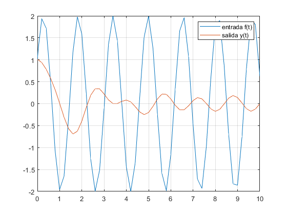
Simulación con simulink Ejercicio b)
Primero encontramos la solución analítca mediante la transformada de laplace y la función de transferencia
syms t
transformadaLaplace([6 5 1],[1],[1 0],[0 0],0*t,10)
APLICAMOS TRANSFORMADA DE LAPLACE y substituimos condiciones iniciales
2
6 Y(s) - s + 5 s Y(s) + s Y(s) - 5
=
X(s)
SUBSTITUIMOS LA TRANSFORMADA DE LA ENTRADA
2
6 Y(s) - s + 5 s Y(s) + s Y(s) - 5
=
0
DESPEJAMOS Y(s)
Y(s)=
s + 5
------------
2
s + 5 s + 6
DESARROLLAMOS LAS FRACCIONES PARCIALES DE Y(s)
Y(s)=
3 2
----- - -----
s + 2 s + 3
Aplicamos transformada inversa, asi la solución es
y(t)=
exp(-2 t) 3 - exp(-3 t) 2
Ahora encontramos la función de transferencia del sistema
G(s) =
Inf*(3/(s + 2) - 2/(s + 3))
/ 3 2 \
| ----- - ----- | Inf
\ s + 2 s + 3 /
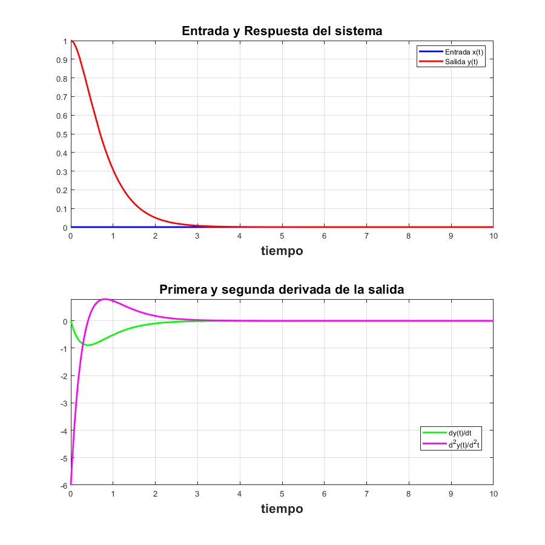 Presentamos el resultado numérico de la realización en simulink
close all
[b.Time,b.Data]
ans =
0 0 1.0000
0.0000 0 1.0000
0.0002 0 1.0000
0.0012 0 1.0000
0.0063 0 0.9999
0.0314 0 0.9976
0.1570 0 0.9421
0.3570 0 0.7306
0.5570 0 0.4271
0.7570 0 0.1026
0.9570 0 -0.1814
1.1570 0 -0.3816
1.3570 0 -0.4775
1.5570 0 -0.4709
1.7570 0 -0.3815
1.9570 0 -0.2403
2.1570 0 -0.0819
2.3570 0 0.0624
2.5570 0 0.1694
2.7570 0 0.2268
2.9570 0 0.2334
3.1570 0 0.1972
3.3570 0 0.1324
3.5570 0 0.0557
3.7570 0 -0.0170
3.9570 0 -0.0735
4.1570 0 -0.1066
4.3570 0 -0.1148
4.5570 0 -0.1010
4.7570 0 -0.0717
4.9570 0 -0.0349
5.1570 0 0.0014
5.3570 0 0.0309
5.5570 0 0.0495
5.7570 0 0.0560
5.9570 0 0.0512
6.1570 0 0.0382
6.3570 0 0.0208
6.5570 0 0.0028
6.7570 0 -0.0124
6.9570 0 -0.0227
7.1570 0 -0.0270
7.3570 0 -0.0258
7.5570 0 -0.0202
7.7570 0 -0.0120
7.9570 0 -0.0031
8.1570 0 0.0047
8.3570 0 0.0102
8.5570 0 0.0130
8.7570 0 0.0129
8.9570 0 0.0105
9.1570 0 0.0067
9.3570 0 0.0024
9.5570 0 -0.0016
9.7570 0 -0.0045
9.9570 0 -0.0061
10.0000 0 -0.0063
Ahora se presenta la solución del sistema como se ve en un scope
plot(b.time,b.Data) legend('entrada f(t)','salida y(t)') grid on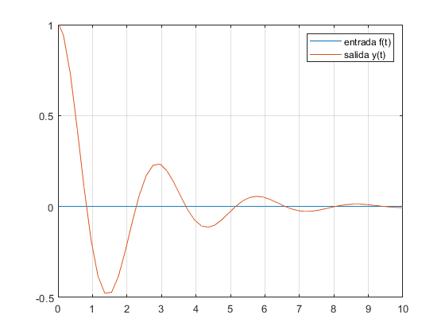